A new wave of coal-based steel plants could commit the world to ~60 billion tonnes of CO₂. The decisions that avoid most of it are being made this decade — and they are cheaper than the alternative.
A plain-language synthesis & cost / time / solution analysis of Bachorz et al., Nature Climate Change (2026) — with carbon-removal context and CarbonSig modeling notes.
Bottom Line Up Front
The argument in one breath. Roughly 70% of the world's steel is still made by burning coal in blast furnaces.1,2 The plants already running, under construction, or merely announced would lock in about 58 GtCO₂; if the trend continues, 114 GtCO₂ — one-fifth of the carbon budget left for a 1.7 °C world.1 Yet 60% of that risk can be avoided at $100–150 per tonne, and doing it in steel is about half the cost of cleaning up an equivalent amount of CO₂ somewhere else.1 The lever is not a future breakthrough — it is where the next $50–90 billion of plant investment goes, mostly in India and China, between now and 2030.
This brief reframes the Bachorz et al. study1 as a management problem along three axes a strategist actually controls — cost, time, and solution mix — adds the missing context on carbon removals and direct air capture (DAC), and closes with how a product-level carbon platform (CarbonSig) lets a steelmaker model these very choices at the level of a single plant, site, product, or company.
The framing that follows treats carbon as money: every tonne of steel carries an embedded carbon cost that, under instruments like the EU's CBAM and rising carbon prices, converts into a real premium for clean steel and a discount for dirty steel.1,11 Lock-in is therefore not only an emissions liability — it is a balance-sheet liability of stranded assets and carbon-price exposure.
Exhibit 01 · The Problem, Sized
Committed (or "locked-in") emissions are those that will be released by assets that already exist or are already planned, and which can only be avoided by early retirement or extra investment outside the normal cycle.1 The stack below decomposes the number. The operating fleet alone commits ~40 Gt; the announced pipeline — plants not yet built — is the largest discretionary block.
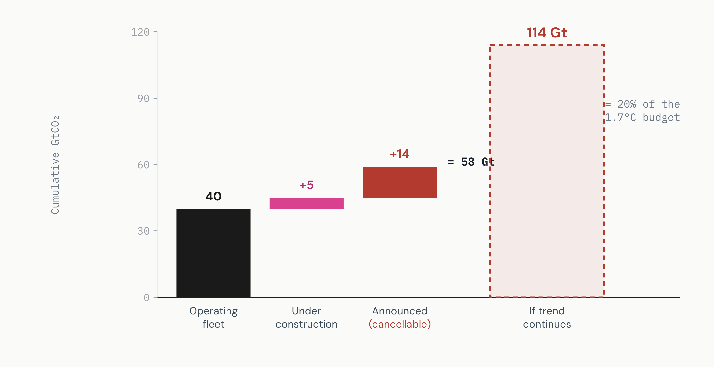
Read: The current fleet is the bulk of the problem, but the ~19 Gt of new BF-BOF projects (pink + red) is the part still open to choice. Source: Bachorz et al. 2026, Fig. 2 & abstract;1 carbon budget per Global Carbon Budget 2025.9
Exhibit 02 · The Long View
Primary steel (made from iron ore, not scrap) has surged in distinct waves: the Global North after WWII, China in the 2000s, and now a third wave across India, other Asia and Latin America, with sub-Saharan Africa on the horizon.1 Each prior wave was built on coal. Whether the third wave repeats that mistake is the entire question.
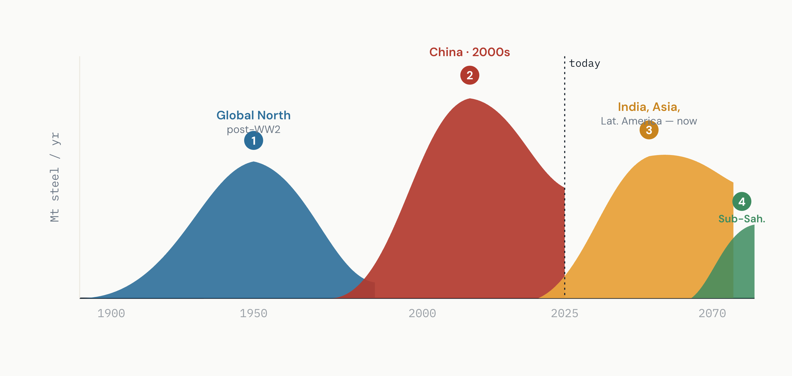
Read: The decision that shapes 2030–2070 emissions is being made now, in the third-wave economies. Source: Bachorz et al. 2026, Fig. 1a (historical data: World Steel Association2; projection: REMIND SSP2).1 Curves are stylized for clarity.
Exhibit 03 · Why It Matters
Steel was responsible for 7% of global CO₂ emissions in 2023, and the coal-based blast-furnace / basic-oxygen-furnace (BF-BOF) route still makes ~70% of all steel.1,2,3 The leverage is concentrated: a small number of plant decisions move a large share of industrial emissions.
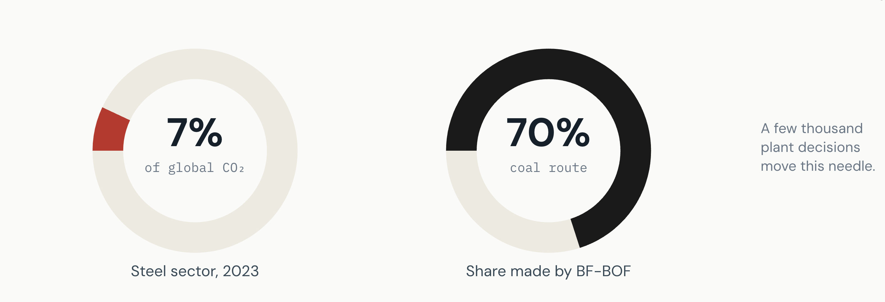
Source: Bachorz et al. 2026 (citing IEA World Energy Outlook 20243 and World Steel in Figures 20252).1
Exhibit 04 · The Levers
The study identifies two near-term decisions that, taken together, cut committed emissions from 58 to 31 GtCO₂.1 Both are timing decisions, not technology bets:
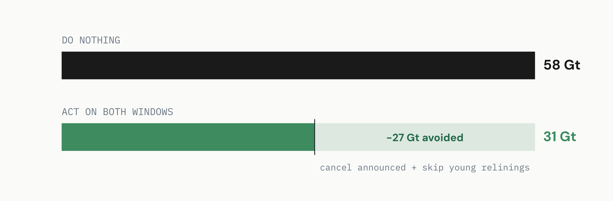
Read: Roughly half the committed total is still a choice. Source: Bachorz et al. 2026, "Quantifying the lock-in" (relining window per Lei et al. 20237, Vogl et al. 20218).1
Exhibit 05 · The Solution Set
There is no single "green steel" — there is a ladder of routes trading off cost against carbon. Plotting them clarifies the strategy: scrap recycling is cheapest but supply-limited; hydrogen-DRI is the deepest cut but priciest; natural-gas DRI is the bridge.1 Carbon capture (CCS) sits awkwardly — moderate cost, partial cut (only ~73% capture), and competing for scarce CO₂ storage.1
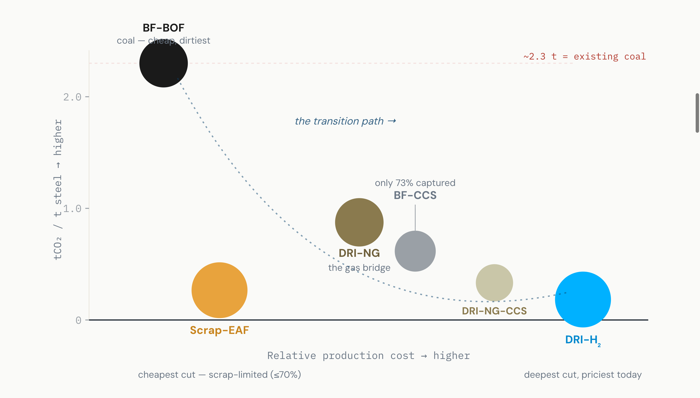
Read: The model's verdict — ride scrap as far as supply allows, bridge with NG-DRI, end on H₂-DRI; CCS plays only a limited role because scarce CO₂ storage is better used for BECCS. Source: Bachorz et al. 2026; emissions factors 2.0–2.3 tCO₂/t and 73% capture from Methods.1 Positions are indicative.
Exhibit 06 · The Pathways
The study runs the global REMIND integrated-assessment model under three futures.1 The contrast between them is the management decision: same climate target, very different cost and stranded-asset profile.
Source: Bachorz et al. 2026, Table 1 & Fig. 4a.1 "Lock-in" lets all announced plants build and relines them; "Fast Transition" cancels announced plants and retires young furnaces early.
McKinsey-style read The choice is not whether to hit 1.5 °C — both mitigation scenarios do. It is whether you pay for it through cheap early redirection (Fast Transition) or expensive late retrofits + offsets (Lock-in). Same destination, very different P&L.
Exhibit 07 · The Prize
Cumulative steel emissions to 2070 fall from 110+ Gt (Current Policies) by −50 Gt (reaching the target via Lock-in) and a further −18 Gt (early action), landing at 42 GtCO₂.1 Fast Transition delivers a 60% cut versus business-as-usual; China and India alone account for 43 Gt of the savings.1
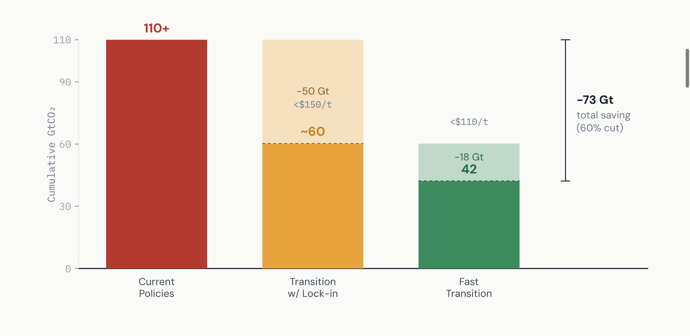
Read: Early action is the cheapest tonne in the stack (<$110/t) and the one that prevents stranded assets. Source: Bachorz et al. 2026, Fig. 4a.1
Exhibit 08 · Cost
Average abatement cost — dollars per tonne of CO₂ avoided — is the price tag on the transition, and the proxy for the carbon price a region would need to make clean steel pay. Most regions sit at $85–$150/tCO₂; the Global North is the outlier at $337, driven by high energy costs.1
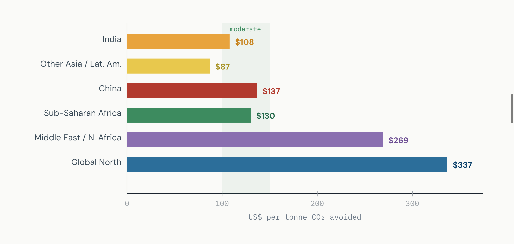
Read: Emerging economies are the cheapest place to abate — which is exactly where the new coal capacity is being built. Source: Bachorz et al. 2026, Fig. 4a.1 (2017 US$.)
Exhibit 09 · The Comparison That Matters
Here is the McKinsey punchline. If you don't avoid the steel lock-in, you must abate the same CO₂ somewhere else in the economy — mostly through expensive bio-energy-with-capture (BECCS). That alternative costs nearly $1 trillion in China and ~$400 billion in India — roughly twice the additional cost of just fixing steel directly.1
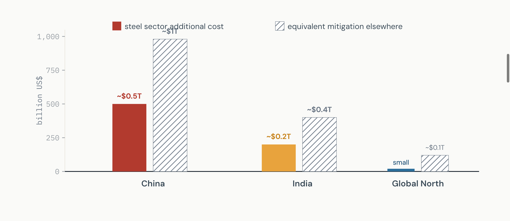
Read: Spending on green steel isn't a premium — it's a discount versus the alternative. Source: Bachorz et al. 2026, Fig. 4b.1 Values approximate.
Exhibit 10 · Time
India is the highest-leverage country: early action there alone avoids 22 GtCO₂.1 The play has two phases on the clock — redirect capital now, electrify it later:
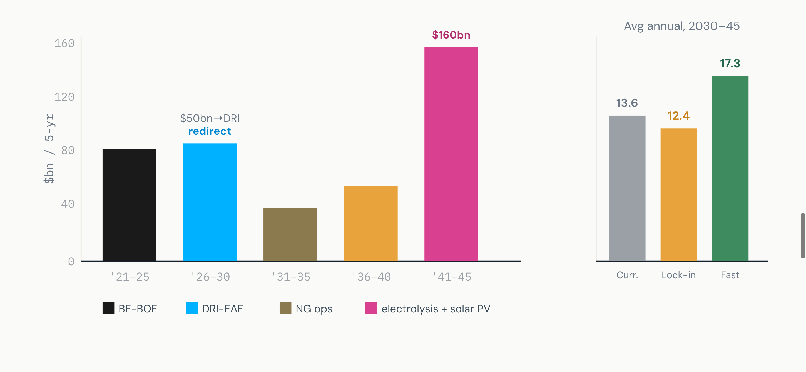
Read: Fast Transition needs only +$3.7 bn/yr more than business-as-usual on average — a small premium for 22 Gt avoided. Source: Bachorz et al. 2026, Fig. 5a–b.1
Exhibit 11 · The Hidden Variable
Green steel is capital-intensive — electrolysers and solar built up front, fuel saved later. That makes it exquisitely sensitive to the cost of capital (WACC). In India, lifting WACC from 5% to 12% nearly doubles peak annual financing cost to ~$35 bn/yr; leaping straight to hydrogen pushes it to ~$50 bn/yr.1 This is why concessional climate finance — not technology — is the binding constraint.
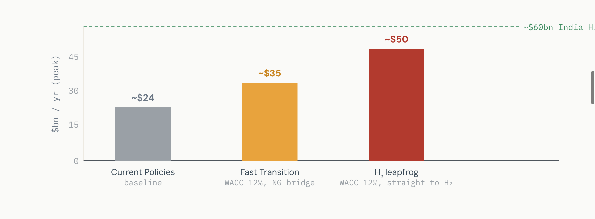
Read: De-risking capital (concessional loans, guarantees, climate finance) is the cheapest lever of all — it changes the answer without changing the technology. Source: Bachorz et al. 2026, Extended Data Fig. 6 & discussion (India H₂ support per CEEW 202510).1
Exhibit 12 · The Playbook
Whatever the speed, the model converges on the same three structural moves.1 This is the robust playbook a steelmaker or planner can bank on:
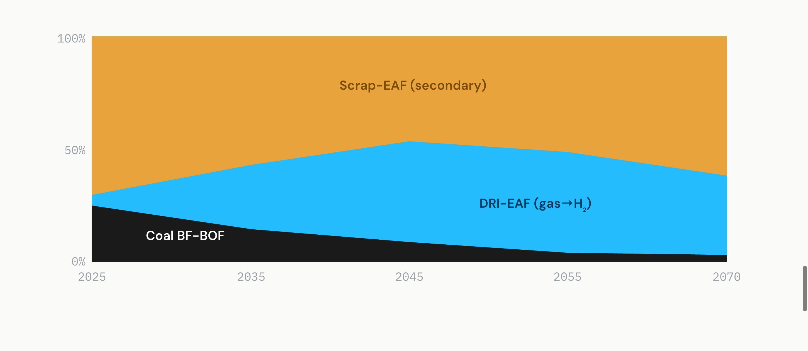
Source: Bachorz et al. 2026, Fig. 3a & Extended Data Fig. 1; shares stylized.1 Scrap is capped near 70% by quality limits (copper contamination).1,4
Exhibit 13 · Carbon Removals & DAC
A striking finding: in this study, carbon capture on steel plants plays only a limited role. Why? Because CO₂ storage is scarce, and the model prefers to spend that storage on BECCS (bio-energy with capture), which cuts system-wide cost more.1 Steel-plant CCS also only captures ~73% of emissions, so it can't deliver true zero.1 The honest hierarchy for removals and capture in a steel strategy:
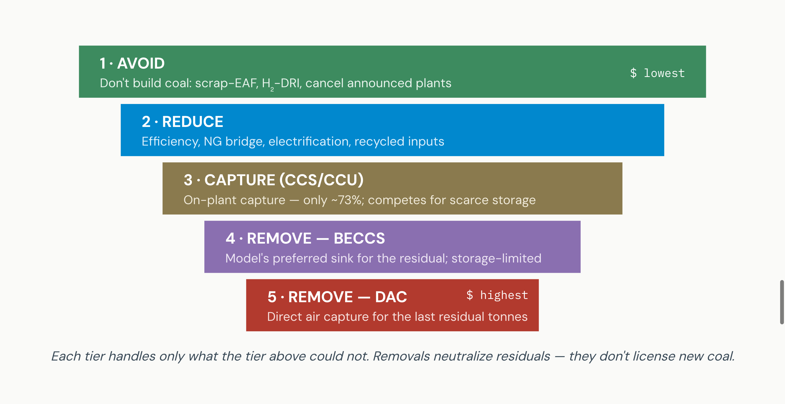
Read: The study models on-plant CCS, BECCS and "other CDR"; DAC is added here as the residual-removal backstop consistent with that logic. In a carbon-as-money world, a DAC or BECCS removal certificate (an EAC) offsets the residual carbon a product still carries — but avoidance is always the cheaper instrument. Source: Bachorz et al. 2026 (CCS/BECCS/CCU treatment, Extended Data Fig. 4);1 DAC tier is analytical context, not from the paper.
Carbon-as-money lens Treat each route as a price. Avoidance (scrap, H₂-DRI) buys a tonne of CO₂ for $85–150. On-plant CCS is mid-priced but caps at 73%. Engineered removals — BECCS, and especially DAC — are the most expensive tonnes and should cover only the irreducible residual. A clean product earns a carbon premium; a residual covered by a verified removal certificate (EAC) is the difference between a credible net-zero claim and greenwash.
Exhibit 14 · Risk
The transition is cheap on paper but not automatic. The study names three barriers, each MECE — distinct, and together exhaustive of the feasibility question for emerging economies.1
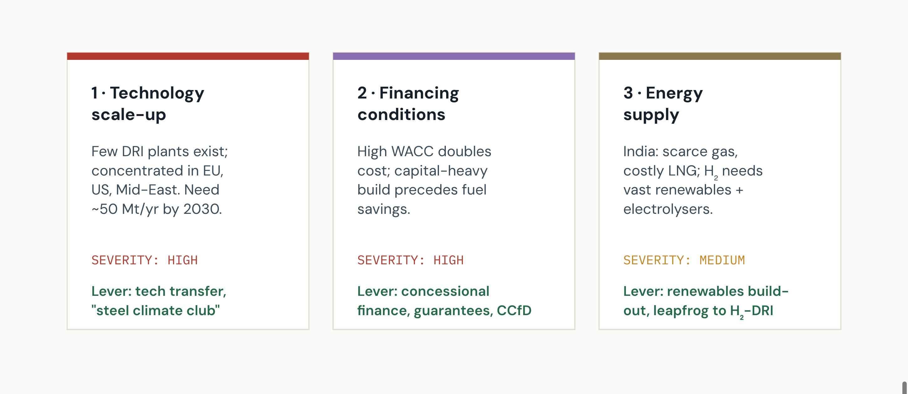
Read: None of the three is a technology-readiness problem — they are deployment, capital and energy-system problems. Source: Bachorz et al. 2026, Discussion;1 CBAM11 noted as a tailwind that improves clean-steel competitiveness.
Exhibit 15 · From Macro Model to the Plant Floor
The Bachorz study answers the question at global / national resolution. A steelmaker, buyer, or financier needs the same logic at plant, product, site and company resolution — with verifiable numbers, not scenario averages. That is the gap CarbonSig fills: it turns "which route, what cost, how much carbon" into a modeled, auditable, tradable answer for a specific asset.
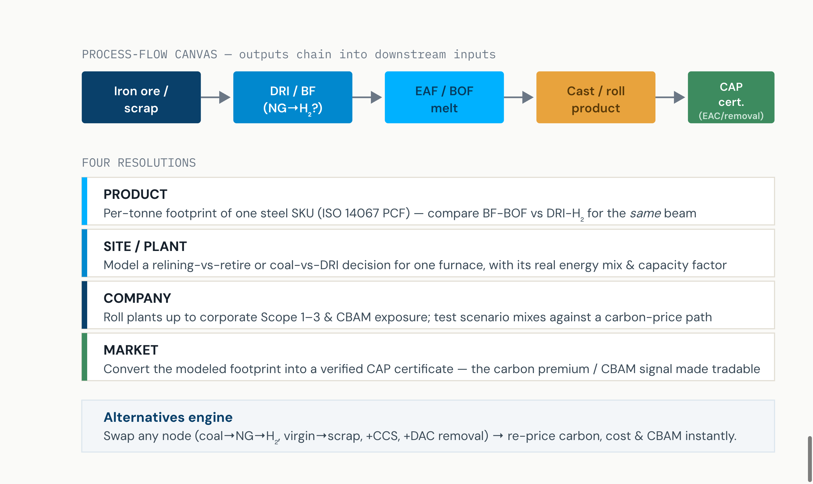
How it maps to the study: the paper's route choices (Exhibit 05), relining windows (Exhibit 04) and removal hierarchy (Exhibit 13) become editable nodes; the carbon-price/CBAM signal (Exhibit 08–09) becomes the pricing layer; the output is an auditable certificate, not a slide. CarbonSig platform notes — not from the source paper.
The synthesis. Bachorz et al. prove the system case: avoid the lock-in early, in steel, and you save 73 Gt at half the cost of cleaning up elsewhere.1 CarbonSig operationalizes that case at the only resolution a buyer or financier can transact on — the product, the plant, the company — and converts a modeled tonne of avoided or removed carbon into money.
Sources & Authorities
Exhibits 13 (DAC tier) and 15 (CarbonSig modeling stack) are analytical context contributed by this brief and are not claims of the source paper. SVG values are read from the paper's figures and rounded for clarity; positions in Exhibit 05 are indicative.